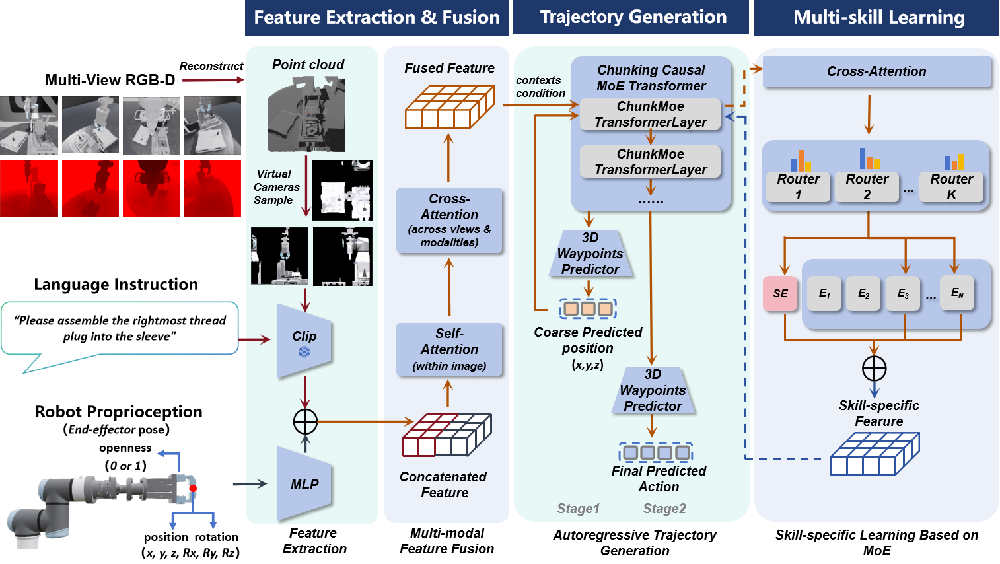
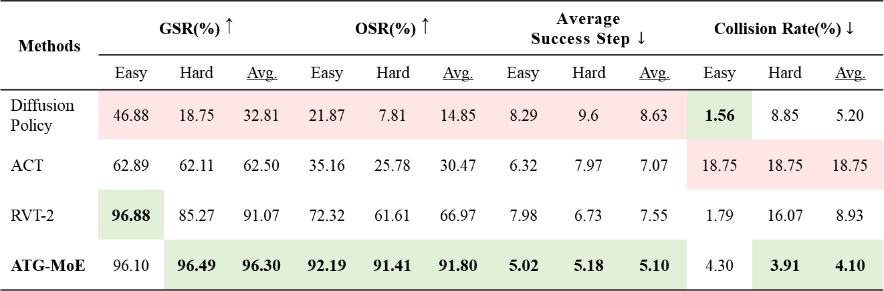
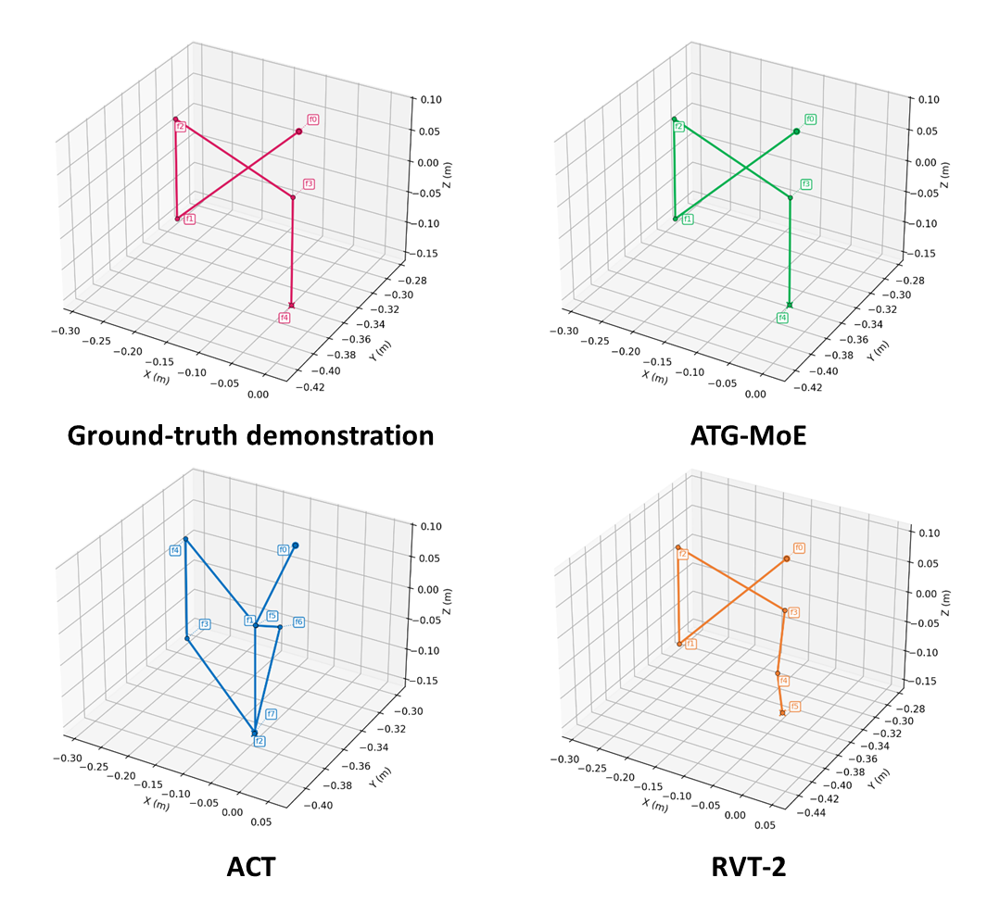
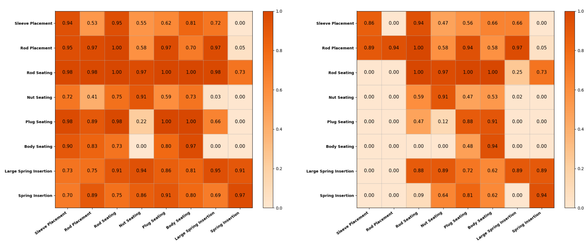
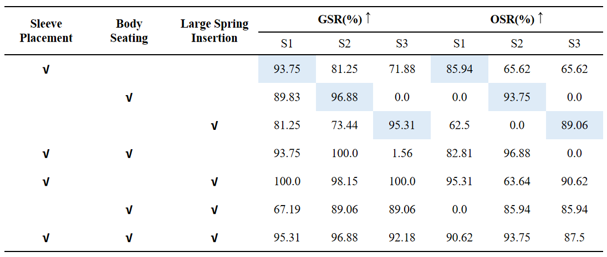
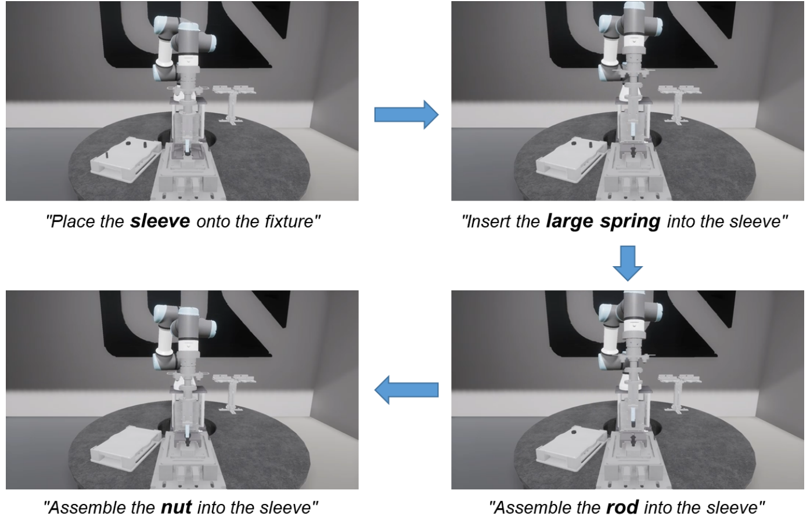
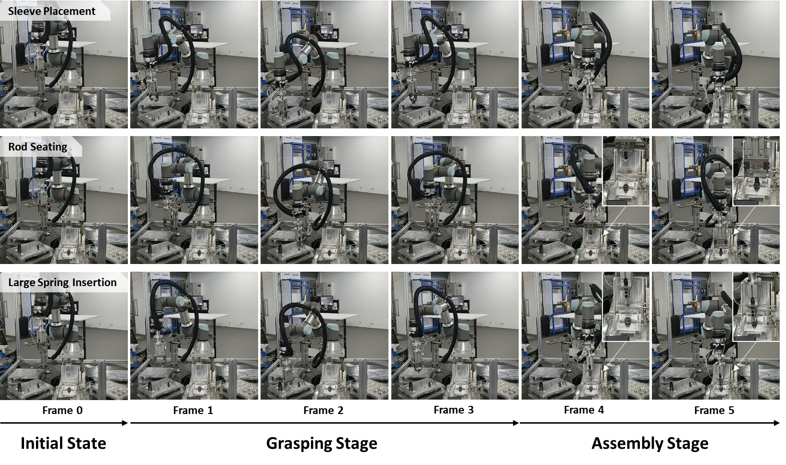
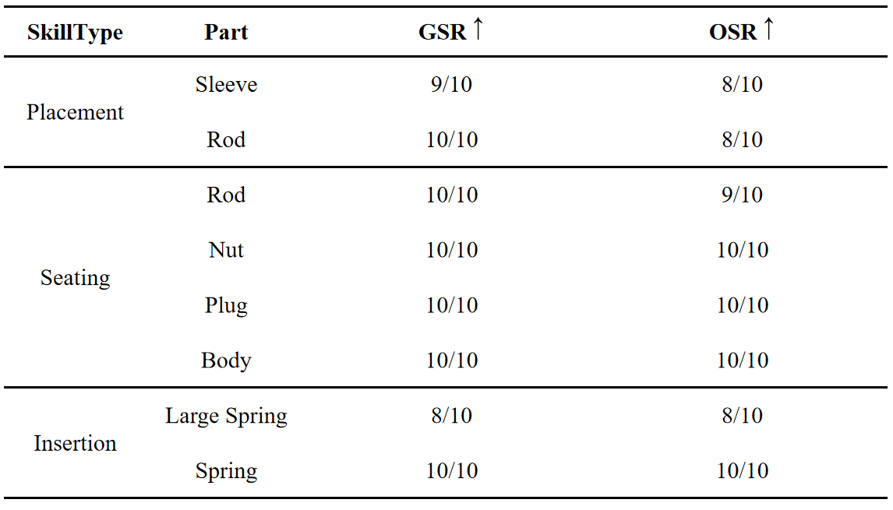

Flexible manufacturing requires robot systems that can adapt to changing tasks, object categories, and environmental conditions. However, traditional robot programming is labor-intensive and inflexible, while existing learning-based assembly methods often suffer from weak positional generalization, complex multi-stage designs, and limited multi-skill integration capability. To address these issues, this paper proposes ATG-MoE, an end-to-end autoregressive trajectory generation method with mixture of experts for assembly skill learning from demonstration.
The proposed method establishes a closed-loop mapping from multi-modal inputs, including RGB-D observations and natural language instructions, to manipulation trajectories. It integrates multi-modal feature fusion for scene and task understanding, autoregressive sequence modeling for temporally coherent trajectory generation, and a mixture-of-experts architecture for unified multi-skill learning through the balance of shared knowledge and skill specialization. In contrast to conventional frameworks that separate perception and control or train different skills independently, ATG-MoE directly incorporates visual information into trajectory generation and supports efficient multi-skill integration within a single model.
We train and evaluate the proposed method on eight representative assembly skills from a pressure-reducing valve assembly task. Experimental results show that ATG-MoE achieves strong overall performance in simulation, with an average grasp success rate of 96.3% and an average overall success rate of 91.8%, while also demonstrating strong generalization and effective multi-skill integration. Real-world experiments further verify its practicality for multi-skill industrial assembly.

Figure 1: Overview of ATG-MoE framework with its three main modules.
The method establishes a closed-loop learning pipeline that maps multi-modal inputs, including RGB-D images and natural language instructions, to trajectory outputs. The core contribution of ATG-MoE lies in the coordinated design of three modules:
We evaluate ATG-MoE through comprehensive simulation and real-world assembly experiments to answer five key research questions.
Can ATG-MoE achieve high accuracy and safety, and generalize to varying object positions?
In simulation comparisons against strong baselines (DP, ACT, RVT-2), ATG-MoE achieves the most balanced and competitive performance. Under the challenging "Hard" setting with unseen tray locations, it maintains a Grasp Success Rate (GSR) of 96.49% and an Overall Success Rate (OSR) of 91.41%. It also achieves the lowest collision rate (4.1% on average) and the lowest average success step, generating safer and more efficient trajectories.

Table 1: Comparison of different methods in simulation experiments.

Figure 9: 3D representation of successful trajectories for the Large Spring Insertion skill. ATG-MoE generates trajectories most consistent with the ground-truth demonstration.
Can ATG-MoE generalize to unseen skills?
The heatmaps indicate that ATG-MoE learns partially transferable perception-control patterns rather than merely memorizing single-skill trajectories. Cross-skill generalization is particularly strong at the grasping stage, with skills of the same category being more transferable to each other. Rod Seating emerges as the most representative source skill, demonstrating the strongest outward transferability.

Figure 11: Heatmaps evaluating the cross-skill generalization capability of ATG-MoE (left: Grasp Success Rate, right: Overall Success Rate).
Can ATG-MoE support integrated learning and coordinated invocation of multiple skills?
Through its MoE design, ATG-MoE simultaneously captures shared knowledge across skills while preserving skill-specific specialization. Under a 3-skill joint training setting, the single model achieves an average GSR of 94.79% and OSR of 90.62%, showing little evidence of catastrophic forgetting. It can continuously invoke multiple skills (e.g., Sleeve Placement → Large Spring Insertion → Rod Seating → Nut Seating) under natural language instructions to accomplish long-horizon assembly.

Table 3: Evaluation of the multi-skill learning capability using three skills from different categories.

Figure 12: Application scenario of multi-skill integration guided by natural language instructions.
Can the method be deployed on a real robotic platform effectively?
Adopting a sim-to-real pipeline with minor real-world fine-tuning, ATG-MoE was deployed on a physical UR3 robot unit. Over eight evaluated skills tested with visually disturbed conditions (varying parts on the tray), the model achieved consistently high grasp and overall success rates. Qualitative execution sequences confirm that ATG-MoE robustly accomplishes the full pipeline from grasp preparation to final assembly.

Figure 13: Real-world execution sequences of representative assembly skills.

Table 4: ATG-MoE’s performance across different skills in real-world experiments.
@article{huang2026atgmoe,
title={ATG-MoE: Autoregressive trajectory generation with mixture-of-experts for assembly skill learning},
author={Weihang Huang and Chaoran Zhang and Xiaoxin Deng and Hao Zhou and Zhaobo Xu and Shubo Cui and Long Zeng},
journal={Under Review},
year={2026}
}